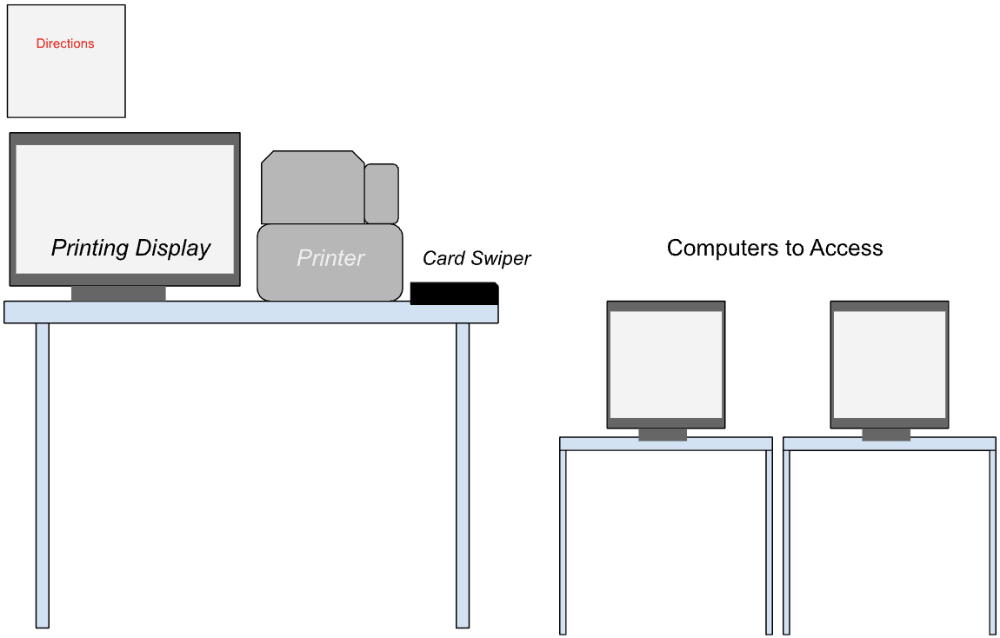
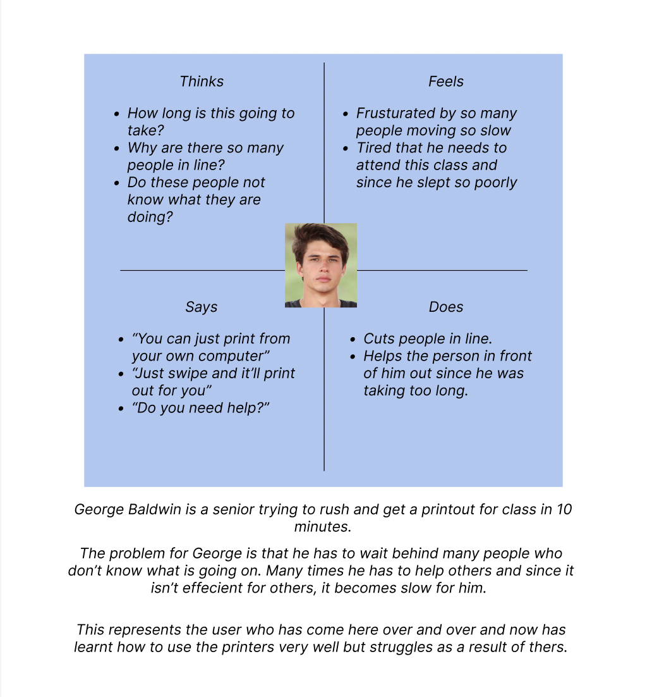
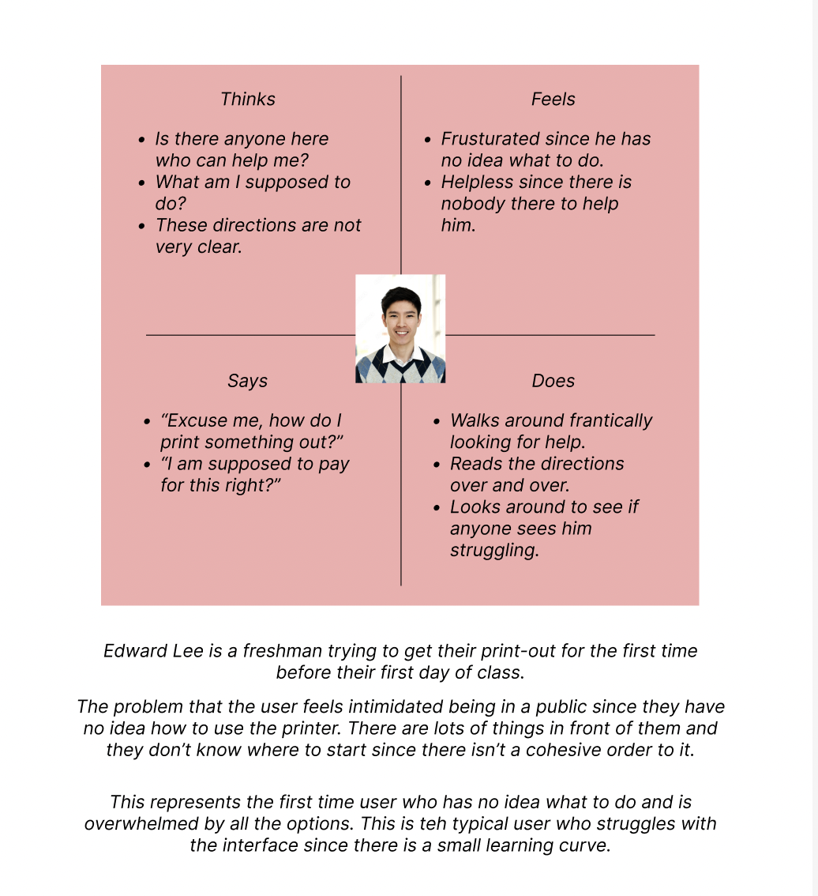
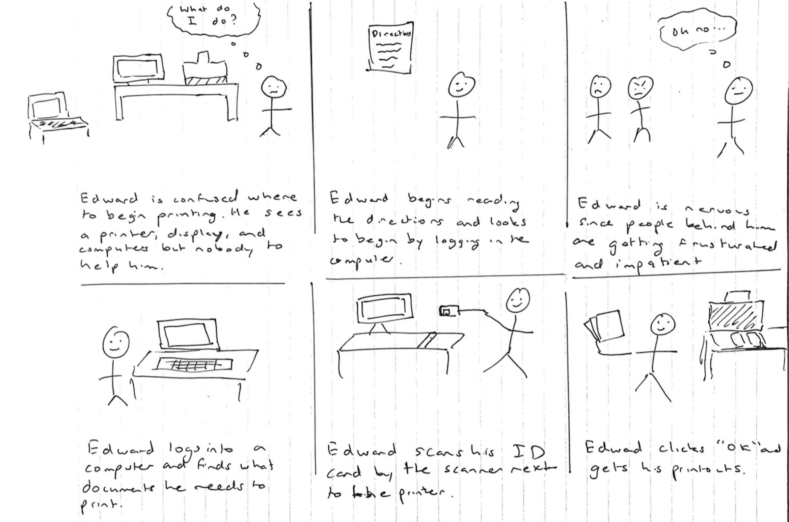

Interface Chosen - Brown University’s Printers (Sci Li)
Questions:
- How many times have you used the printers at the Sci Li?
- How easy was the process of printing your papers?
- Were you aware that you could print from your own computer?
- Was the process easier or more difficult than expected?

The Problem: The interface here is trying to solve the problem of making
the printing process easier and quicker for students. Here one can add to the
printing queue from their local computer or from the ‘Computers to Access area
and once they go ahead and swipe their card it will appear on the Printing Display
and they may proceed with the printing process. This allows for the payment,
person, and printout to all be done through a single swipe of the card.
Observations:
Person 1:
- Seemed comfortable using it, had printed here before
- Was with a friend and didn’t dedicate too much thought into
- Swiped card pressed button and waited
- Didn’t use computers to access
Person 2:
- Clearly first time doing it
- Walked back and forth between printer and computer
- Read the directions and then went to a computer
- Directions were well written out and they kept referring back to it
- Still hesitant
- Swiped one time unnecessarily
Person 3:
- Seemed like they had done it before
- Worked slowly and used the computers to access
- Not much hesitation just slow
- How many times have you used the printers at the Sci Li?
- Generally people have used it multiple times before
- Freshman hadn't used it as often
- Mostly people weren't experts with it though
- How easy was the process of printing your papers?
- Pretty simple considering steps needed
- Not very many on campus
- The card swipe makes it easy
- Were you aware that you could print from your own computer?
- Almost everyone was aware
- Many were aware and don't use it
- Most started by not using it so continue doing that
- Was the process easier or more difficult than expected?
- Generally easier but learning is hard
- All agree once you know it then it is easy
- When asked follow up on the first time they said it was hard


